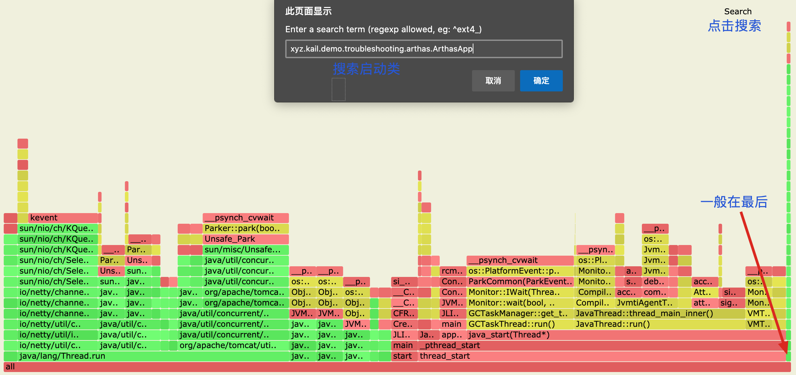
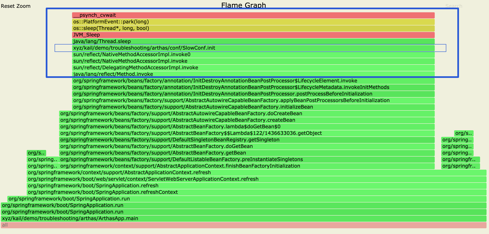

应用启动耗时分析
Arthas 本身支持 trace 和 profiler 功能，分别用于 跟踪每个节点的耗时 和 生成火焰图
tracehttps://alibaba.github.io/arthas/trace.htmlprofilerhttps://alibaba.github.io/arthas/profiler.html
但是 Arthas 常用来分析运行中应用的问题，应用启动过程分析在 Arthas Attach 上应用的时候，已经错过要追踪的方法了。
这里主要描述了如何时候 Arthas 进行应用启动过程中的分析。
环境准备
# 下载完整的包
$ wget https://github.com/alibaba/arthas/releases/download/arthas-all-3.2.0/arthas-3.2.0-bin.zip
# 解压
$ unzip arthas-3.2.0-bin.zip
# 进入工具目录
$ cd arthas-3.2.0-bin
示例程序
该程序是一个 Spring Boot 的应用，这里构造一段耗时的方法，夹杂到 Spring 的启动流程中
@Slf4j
@Configuration
public class SlowConf {
@PostConstruct
public void init() throws InterruptedException {
log.info("init...");
for (int i = 0; i < 20_000; i++) {
Thread.sleep(1);
}
log.info("init...ok");
}
}
Block 启动的应用
在应用的启动参数中添加以下 JVM 参数
-agentlib:jdwp=transport=dt_socket,address=8000,server=y,suspend=y
参数的含义
-agentlib:jdwp # 启用 JDWP，它包含若干子选项：
transport=dt_socket # JPDA front-end和back-end之间的传输方法。dt_socket表示使用套接字传输
address=8000 # JVM 在 8000 端口上监听请求
server=y # y 表示启动的JVM是被调试者，如果为n，则表示启动的JVM是调试器
suspend=y # y 表示启动的JVM会暂停等待，直到调试器连接上，n表示不暂停等待
这时 非 Debug模式 启动应用，会在控制台输出，并 Block 住，等待调试程序的连接
Listening for transport dt_socket at address: 8000
不增以上参数，使用 IDEA 的 Debug 模式启动应用时，其实也可以在控制台的第一行看到输出以下信息，
/Library/Java/JavaVirtualMachines/jdk1.8.0_151.jdk/Contents/Home/bin/java \
-agentlib:jdwp=transport=dt_socket,address=127.0.0.1:49252,suspend=y,server=n \
-javaagent:~/Library/Caches/JetBrains/IdeaIC2020.1/captureAgent/debugger-agent.jar \
-Dfile.encoding=UTF-8 \
-classpath ... \
xyz.kail.demo.troubleshooting.arthas.ArthasApp
Connected to the target VM, address: '127.0.0.1:49252', transport: 'socket'
启动 Arthas
$ ./as.sh
... # 选择 Java 进程，因为这时候 还没完全启动，看不到 main class，这里选择 5
* [1]: 80041 org.jetbrains.idea.maven.server.RemoteMavenServer36
[2]: 94888 org.jetbrains.kotlin.daemon.KotlinCompileDaemon
[3]: 95213 org.jetbrains.jps.cmdline.Launcher
[4]: 79647
[5]: 95214 -- main class information unavailable
5
# ... 开启 jdwp 之后，attach Java 进程时会比已经启动的应用慢很多，大概 10几秒
# 确认一下，确实是需要调试的应用
[arthas@95214]$ sysprop | grep sun.java.command
sun.java.command xyz.kail.demo.troubleshooting.arthas.ArthasApp
[arthas@95214]$ jvm | grep INPUT-ARGUMENTS
INPUT-ARGUMENTS -agentlib:jdwp=transport=dt_socket,address=8000,server=y,suspend=y
# 开启 profiler
[arthas@95214]$ profiler start -e wall
Started [wall] profiling
取消启动应用的 Block
$ jdb -connect com.sun.jdi.SocketAttach:port=8000,hostname=127.0.0.1
设置未捕获的java.lang.Throwable
设置延迟的未捕获的java.lang.Throwable
正在初始化jdb...
>
VM 已启动: 当前调用堆栈上没有帧
# 输入 run 命名，这时 ArthasApp 已开始正常运行，Ctrl + C 退出 jdb
main[1] run
查看 profiler 分析结果
[arthas@95214]$ profiler stop
profiler output file: /Users/kail/IdeaProjects/github/hello-world-example/Troubleshooting/arthas-output/20200524-135944.svg
OK
在浏览器中打开 profiler 的生成的燃尽图：

点击最后一个启动 main 方式类，可以看出，真个启动过程，大部分消耗在了 SlowConf.init 方法上了

使用 trace 分析具体耗时
trace 分析启动过程的方式要稍微复杂些，因为应用启动 Block 时，main 方法还没被加载，所以没办法 trace，需要先执行到 main 方法，大致流程如下：
- 带
-agentlib:jdwp启动应用，这是应用被 Block，等到jdb链接 - 使用 Arthas attach 到应用，这时候
sc *ArthasApp是搜不到的 - 使用
jdbDebug 应用，设置在入口设置断点，格式：stop at 类全路径名:行号- 如：
stop at xyz.kail.demo.troubleshooting.arthas.ArthasApp:13
- 如：
- 在
jdb控制太输出cont指令 执行到入口的断点处 - 在 Arthas 控制台
trace慢流程的方法 - 重复以上过程，细化
trace的类和方法
# 查看 Classloader
[arthas@808]$ classloader -t
+-BootstrapClassLoader
+-sun.misc.Launcher$ExtClassLoader@7cc8d617
+-com.taobao.arthas.agent.ArthasClassloader@529ffda0
+-sun.misc.Launcher$AppClassLoader@18b4aac2
# 使用 AppClassLoader 加载要执行的类（否则无法 trace）
[arthas@808]$ classloader -c 18b4aac2 --load org.springframework.boot.SpringApplication
# trace 之后（这里拦截 String 的包），开启 jdb，使程序开始启动，等待执行完成
[arthas@808]$ trace org.springframework* * '#cost > 1000'
Press Q or Ctrl+C to abort.
Affect(class-cnt:1 , method-cnt:81) cost in 314 ms.
`---ts=2020-05-24 15:48:50;thread_name=main;id=1;is_daemon=false;priority=5;TCCL=sun.misc.Launcher$AppClassLoader@18b4aac2
`---[32459.956569ms] org.springframework.boot.SpringApplication:run()
`---[32459.024813ms] org.springframework.boot.SpringApplication:run() #1215
`---[32458.825821ms] org.springframework.boot.SpringApplication:run()
...
`---[32282.689089ms] org.springframework.boot.SpringApplication:run() #1226
`---[32282.240717ms] org.springframework.boot.SpringApplication:run()
...
+---[31271.331255ms] org.springframework.boot.SpringApplication:refreshContext() #315
| `---[31271.273241ms] org.springframework.boot.SpringApplication:refreshContext()
| +---[31262.084619ms] org.springframework.boot.SpringApplication:refresh() #397
| | `---[31262.034312ms] org.springframework.boot.SpringApplication:refresh()
| | +---[0.009773ms] org.springframework.util.Assert:isInstanceOf() #746
| | `---[31261.867912ms] org.springframework.context.support.AbstractApplicationContext:refresh() #747 ❤ 这里花了 30 秒
| `---[9.075883ms] org.springframework.context.ConfigurableApplicationContext:registerShutdownHook() #400
...
[arthas@1420] classloader -c 18b4aac2 --load org.springframework.context.support.AbstractApplicationContext *
[arthas@1420] trace org.springframework.context.support.AbstractApplicationContext * '#cost > 10000'
# 循坏该步骤（每次重启项目），每次往细节定位
其他方法
- 以上方法属于通用方法，使用与各种场景，但是
- 假如你可以修改代码，在 main 方法入口先 sleep 30 秒，然后打开 Arthas 准备好各种监控的语句，会更简便
 Edit this page
Edit this page